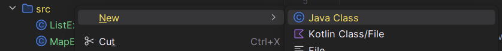
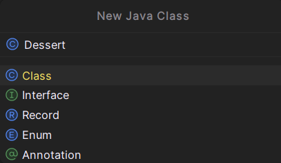
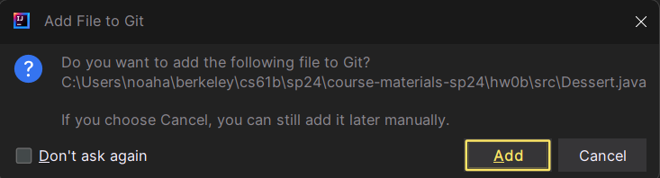
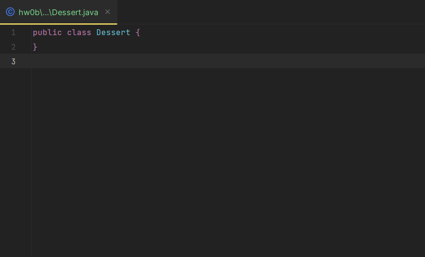
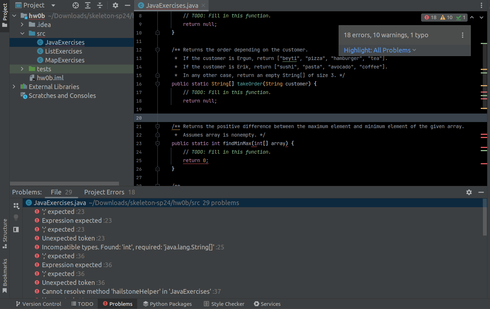

作业0B：数据结构
作业设置
请按照
作业工作流程指南
开始这份作业。这份作业的代号是
hw0b
。
语言构造
类型
Java 是一种 静态类型 语言，这意味着每个变量都有一个在编译时已知的类型，因此你必须在代码中指定它。相比之下，Python 是一种 动态类型 语言，这意味着变量的类型通常只在运行时才知道，因此你不需要在代码中指定它们。
在 Java 中，有两种类型：基本类型和引用类型。基本类型是小写的，我们在
A 部分
中提到的我们关心的类型是：
boolean
、
int
、
char
、
double
。
几乎所有其他类型都是引用类型，例如
String
。如果一个类型以大写字母开头，它很可能是一个引用类型。
你将在第 4 讲中学习更多关于基本类型和引用类型之间的区别，但对于这个作业，你需要知道每个基本类型都有一个对应的引用类型（
Boolean
、
Integer
、
Character
、
Double
）。如果你使用"泛型"来声明数据结构，你
必须
使用引用类型。你通常可以无缝地在基本类型及其引用类型之间进行转换。
null
Java 也有
null
，它相当于 Python 中的
None
。
任何引用类型都可以赋值为
null
。如果我们尝试从值为
null
的变量访问实例成员或调用实例方法，我们将看到一个称为
NullPointerException
的错误。
数组（固定大小）
Java 数组很像 Python 列表。但是，Java 数组是
固定大小
的，
所以我们不能添加或删除元素（即不能使用
append
、
remove
等方法）。
| Python | Java |
|---|---|
|
|
-
在
new int[3]中，int是数组的类型；3是长度。 使用这种语法，所有元素都会取"默认值"。对于int， 默认值是 0。 -
数组不能很好地打印，原因超出了作业0的范围。要打印数组，可以调用
Arrays.toString(array)。 - 数组没有 长度方法 。它是一个 实例变量 ，所以它没有括号。
- Java 不支持 负索引 或 切片 。
Foreach 循环 / 增强 for 循环
| Python | Java |
|---|---|
|
|
-
注意迭代变量的类型声明，以及使用
:而不是in。 -
我们也可以在其他某些类型上使用此语法，例如
List和Set。
列表（可变大小）
| Python | Java |
|---|---|
|
|
-
Java 有
List接口。我们主要使用ArrayList实现。 -
List接口使用尖括号<和>来 参数化 它所保存的类型。 -
List同样不支持切片或负索引。
集合
| Python | Java |
|---|---|
|
|
-
Java 有
Set接口。主要有两种实现：TreeSet和HashSet。TreeSet保持其元素按"排序"顺序，且速度快。相比之下，HashSet没有定义的"顺序"，但（通常）非常快。- 我们稍后在课程学习渐近分析时会正式化这些"快"的概念。
-
Set不能包含重复项。如果我们尝试添加一个已存在于集合中的项，什么都不会发生。
字典 / 映射
| Python | Java |
|---|---|
|
|
-
Java 有
Map接口。主要有两种实现：TreeMap和HashMap。与集合类似，TreeMap保持其键排序且速度快；HashMap没有定义的顺序，但（通常）非常快。 -
Map不能包含重复键。如果我们尝试添加一个已存在于映射中的键，值会被覆盖。 - 在尖括号中，我们首先写"键类型"，然后写"值类型"。
-
Map不能直接与:for 循环一起使用。通常，我们调用keySet来迭代键的集合，并使用这些键来检索值。也可以迭代entrySet来同时获取键和值。
类
| Python | Java |
|---|---|
|
|
我们可以如下使用这些类：
| Python | Java |
|---|---|
|
|
主方法
Java 程序也可以有一个名为
main
的特殊方法。当你执行一个程序时，会调用
main
方法。
main
方法运行其中的任何代码，这些代码可能会调用程序中定义的其他方法。
我们使用签名
public static void main(String[] args)
来定义
main
方法。你将在本课程的后面学习这个签名各部分的含义。现在，你可以把
main
看作你所编写代码的"播放按钮"。
要运行前面示例中的代码，我们可以在
Point
类中创建一个
main
方法，如下所示：
| Python | Java |
|---|---|
|
|
注意，在 Java 中，
main
方法是定义在
类内部
的。
如果你在 IntelliJ 中编写代码，你实际上可以"播放"
main
方法！IntelliJ 会在
main
方法签名的左侧显示一个绿色的播放按钮。点击它来运行其中的代码。
程序
让我们看一些使用数据结构和类的 Java 程序。 这里有一些简单的例子，如果你忘记了怎么做某事，可能会回过头来参考。
数字列表最小值的索引
| Python | Java |
|---|---|
|
|
异常
最后，让我们看看如何在前面的示例中相比 Python 在 Java 中抛出异常。
| Python |
|---|
|
Java |
|
编程练习
为了让你更熟悉 Java 语法和测试，这里有一些练习题供你解决！完成函数后，我们为你提供了一些测试。虽然我们提供了测试，但你也可以编写自己的测试！编写测试不仅对这门课程至关重要，而且是一项非常重要的通用技能。它加强了我们对特定方法应该做什么的理解，并使我们能够捕获边缘情况！在课程的后面你会有更多关于测试的练习，但我们希望你尽早接触。
请先完成 实验 01 ，并参考 这里 了解如何开始作业。
在完成作业时，你可能需要使用不同的数据结构，如
ArrayList
和
TreeMap
。要导入这些类，如果你将鼠标悬停在使用数据结构的地方，IntelliJ 会给你导入的选项，或者你可以手动添加：
import java.util.ArrayList;
import java.util.TreeMap;
任务 1：JavaExercises
JavaExercises.java
有 4 个不同的方法供你完成：
-
makeDice：此方法返回一个 新的 整数数组[1, 2, 3, 4, 5, 6]。 -
takeOrder：此方法接受一个String并返回一个 新的 数组，其中包含顾客的订单。如果顾客是Ergun，你应该按顺序返回字符串数组["beyti", "pizza", "hamburger", "tea"]。如果顾客是Erik，你应该返回字符串数组["sushi", "pasta", "avocado", "coffee"]。在其他任何情况下，返回一个大小为 3 的空字符串数组。注意： 由于我们将在课程后面看到的原因，
==在处理String时行为奇怪。在 Java 中，你应该使用s1.equals(s2)来检查字符串s1和s2是否相等。 -
findMinMax：此方法接受一个int[] array并返回给定数组中最大元素和最小元素之间的正差值。你可以假设输入数组非空。 -
hailstone：此方法接受一个int n作为输入，并将其冰雹序列作为整数列表返回。冰雹序列由以下过程定义：选择一个正整数 n 作为起始。如果 n 是偶数，将 n 除以 2。如果 n 是奇数，将 n 乘以 3 再加 1。继续这个过程，直到 n 为 1。-
你应该使用提供的辅助方法
hailstoneHelper通过递归来计算。
-
你应该使用提供的辅助方法
对于这部分，你可以导入
List
和
ArrayList
。
任务 2：ListExercises
ListExercises.java
有 4 个不同的方法供你完成：
-
sum：此方法接受一个列表List<Integer> L并返回该列表中元素的总和。如果列表为空，方法应返回 0。 -
evens：此方法接受一个列表List<Integer> L并返回一个 新的 列表，其中包含给定列表中的偶数。如果没有偶数元素，它应返回一个空列表。 -
common：此方法接受两个列表List<Integer> L1、List<Integer> L2并返回一个 新的 列表，其中包含两个给定列表中都存在的元素。如果没有共同元素，它应返回一个空列表。 -
countOccurrencesOfC：此方法接受一个列表和一个字符List<String> words、char c，并返回给定字符在字符串列表中出现的次数。如果该字符没有出现在任何单词中，它应返回 0。
对于这部分，你可以导入
ArrayList
。
任务 3：MapExercises
MapExercises.java
有 3 个不同的方法供你完成：
-
letterToNum：此方法返回一个映射，将每个小写字母映射到其在字母表中的顺序对应的数字，其中 'a' 对应 1，'z' 对应 26。 -
squares：此方法接受一个列表List<Integer> nums并返回一个映射，将列表中的整数映射到它们的平方。如果给定的列表为空，它应返回一个空映射。 -
countWords：此方法接受一个列表List<String> words并返回一个映射，将列表中的单词映射到它们出现的次数。如果给定的列表为空，它应返回一个空映射。
对于这部分，你可以导入
TreeMap
。
任务 4：Dessert.java
与你之前的课程相比，61B 可能在作业中给你留出很多灵活的空间。例如，这个练习没有模板代码——不要惊慌！
在
src/
文件夹中创建一个名为
Dessert
的类（你需要创建一个新文件并
将其添加到 Git
）。此类应具有以下特征：
-
两个实例变量：
int flavor和int price。 -
一个构造函数，接受两个参数
int flavor和int price，并相应地设置实例变量。 -
一个静态变量
int numDesserts，用于跟踪到目前为止创建的甜点数量。 -
一个方法
public void printDessert()，打印甜点的口味和价格，以及到目前为止创建的甜点总数，用空格分隔。-
例如，如果我们创建一个口味为 1、价格为 2 的甜点，然后调用其
printDessert()方法，它应该打印1 2 1。 -
如果我们然后创建一个口味为 3、价格为 4 的甜点，然后调用其
printDessert()方法，它应该打印3 4 2。
-
例如，如果我们创建一个口味为 1、价格为 2 的甜点，然后调用其
-
最后，一个方法
public static void main(String[] args)，执行时只打印一行I love dessert!。
请确保完全按照上述行为实现，否则你可能无法通过测试！
当你完成
Dessert.java
后，取消注释
tests/DessertTest
中的相应行并运行测试。
如何在 IntelliJ 中创建新类
-
右键单击屏幕左侧的
src/文件夹，然后选择New>Java Class。
-
你应该会看到一个弹出窗口。在
Name字段中，输入Dessert，然后按 Enter。
-
如果你看到类似以下的弹窗询问你是否将文件添加到 Git，选择
Add。
-
你现在应该在
src/文件夹中看到一个名为Dessert.java的新文件。它应该看起来像这样，之后你可以修改它以满足上述规格：
用 Python 实现的
Dessert
类
Dessert
类
class Dessert:
numDesserts = 0
def __init__(self, flavor, price):
self.flavor = flavor
self.price = price
Dessert.numDesserts += 1
def printDessert(self):
print(self.flavor, self.price, Dessert.numDesserts)
if __name__ == "__main__":
print("I love dessert!")
测试和调试
如果你在运行代码时遇到困难，请在联系课程工作人员之前先阅读本节中的常见错误！
语法错误
如果你的代码包含语法错误，IntelliJ 将不会运行你的代码（绿色的播放按钮不会出现）。
如果你的代码有语法错误，你会在右上角看到一个红色的感叹号，你的代码中会有红色的波浪线。要查看语法错误在哪里，你可以点击红色感叹号。

如果你在你没有修改过的代码部分看到语法错误，你可能在代码前面有语法错误（例如，括号不匹配），这会导致代码后面部分无法编译。
例如，在上面的图片中，
takeOrder
方法在第19行缺少右括号。这导致第23行出现语法错误。
提交内容
-
JavaExercises.java -
ListExercises.java -
MapExercises.java -
Dessert.java
对于这个作业，你需要完成
JavaExercises
、
ListExercises
和
MapExercises
中的方法。你还需要创建一个新文件
Dessert.java
并根据所需的规格实现它。在提交到 Gradescope 之前确保测试你的代码。虽然我们对这个特定作业没有提交次数限制，但建议你在将来使用现有测试并编写自己的测试来查看你的方法是否有效，然后再将代码提交到自动评分器，因为可能会有提交次数限制。
这个作业是 10 分 ，截止日期是 1/22, 23:59 。